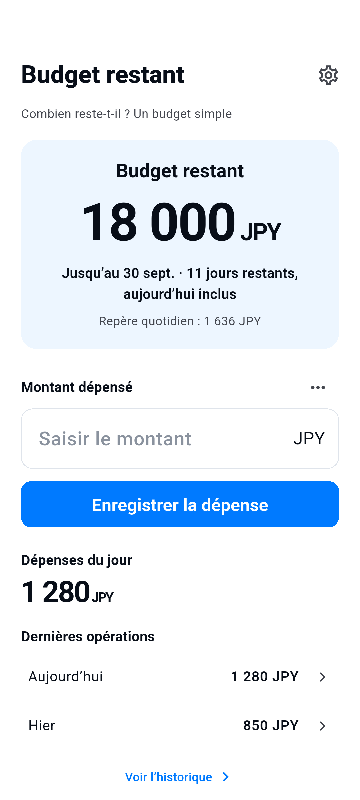

Définissez le montant, les dates et la devise.
Combien reste-t-il ? Un budget simple
Notez vos dépenses. Voyez ce qu’il reste.
Un budget simple, avec le montant restant toujours visible.
Voir le fonctionnementPour iPhone et Android · Bientôt en boutique

Mode d’emploi
Dépensez. Notez. Voyez ce qu’il reste.
Enregistrez une dépense sur l’accueil. Les notes sont facultatives.
Modifiez ou supprimez des opérations et ajoutez des remboursements dans l’historique.
Créez vous-même le budget suivant. Les précédents restent dans l’historique.
L’essentiel
Un budget. Une vue claire.
- Budget restant
- Le solde repose uniquement sur vos opérations enregistrées. Ce n’est ni un solde bancaire ni une garantie de pouvoir dépenser ce montant. Les remboursements restaurent le budget, sans suivi des revenus. Aucun renouvellement ni report automatique.
- Six langues · Huit devises
- 日本語 / English / 한국어 / 简体中文 / Español / Français
JPY / USD / EUR / KRW / CNY / GBP / CAD / AUD - Publicité et choix de confidentialité
- L’app est gratuite et affiche une seule petite bannière sur l’accueil, masquée pendant la saisie ou la modification. Les choix de confidentialité sont dans les réglages lorsque nécessaires. Les échecs de consentement ou de connexion n’empêchent pas d’enregistrer des dépenses.
Données sur votre appareil
Aucun compte nécessaire.
Les montants, devises, dates, dépenses, remboursements, notes et réglages sont stockés sur votre appareil pour fournir les fonctions de l’app. Aucun compte ni service de synchronisation cloud propre n’est utilisé. Ces données ne sont transmises ni à nos serveurs ni au SDK publicitaire. Aucun SDK d’analyse n’est ajouté.
Les données sont stockées sur l’appareil. Les sauvegardes système et transferts peuvent les inclure, sans garantie de restauration. Supprimer l’app peut effacer les données. Il n’y a ni compte ni service de restauration cloud.
Politique de confidentialité →